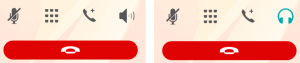

手機產品是 Firefox OS 的重要任務之一，Phone app 與 Callscreen app 實現了撥打/接聽電話功能，背後與底層溝通的媒介 Telephony API [1] 佔了非常重要的地位，安全性的考量下，Telephony API 僅開放給 Certified app 使用，不過依然可以輕易地客製你的 Phone app，因此這篇文章將以 Firefox OS v2.1 為範例，為讀者介紹 Telephony API 的操作以及 Phone app 與 Callscreen app 實際上如何使用這項功能。
 左為 Phone app，右為 Callscreen
左為 Phone app，右為 Callscreen
System app 與 Callscreen 的運作機制
當有電話撥入時，由 Callscreen app 負責顯示通話的資訊，但是系統啟動接著進入 Home Screen 後，Callscreen app 其實從未開啟過，它又是如何被系統叫出畫面的呢？
這時我們就需要探討 System app 中，如何藉由以下這兩者間的合作，在收到 incoming call/dialing 事件後，顯示 Callscreen app 的過程。
- DialerAgent (apps/system/js/dialer_agent.js)
- CallscreenWindow (apps/system/js/callscreen_window.js)
CallscreenWindow 繼承自
AttentionWindow /
AppWindow ，因此可以透過 AppWindow API 來控制 App 顯示與否，而
CallscreenWindow 的目的就是可以更容易地操作 Callscreen app 顯示的時機。
回到初始的過程，首先由 bootstrap.js [2] 來建立
DialerAgent 物件，以及呼叫
start() ：
DialerAgent.prototype.start = function da_start() {
...
this._telephony.addEventListener('callschanged', this);
....
this._callscreenWindow = new CallscreenWindow();
this._callscreenWindow.hide();
...
return this;
};
123456789
DialerAgent.prototype.start = function da_start() { ... this._telephony.addEventListener('callschanged', this); .... this._callscreenWindow = new CallscreenWindow(); this._callscreenWindow.hide(); ... return this; };
DialerAgent 與
CallscreenWindow 的初始工作可以分成以下三項：
- 初始 CallscreenWindow －建立 this . _callscreenWindow 物件，讓接下來的程式碼可以操作 CallscreenWindow 。 CSORIGIN 是 Callscreen 的 URL：app://callscreen.gaiamobile.org/，藉由它來設定 manifestURL 、 url 以及 origin ，這些資訊在下一步會用來建立 iframe。 var CSORIGIN = window.location.origin.replace('system', 'callscreen') + '/'; var CallscreenWindow = function CallscreenWindow() { this.config = { manifestURL: CSORIGIN + 'manifest.webapp', url: CSORIGIN + 'index.html', origin: CSORIGIN }; this.isCallscreenWindow = true; this.reConfig(this.config); this.render(); if (this._DEBUG) { CallscreenWindow[this.instanceID] = this; } this.publish('created'); }; 1 2 3 4 5 6 7 8 9 10 11 12 13 14 15 16 var CSORIGIN = window . location . origin . replace ( 'system' , 'callscreen' ) + '/' ; var CallscreenWindow = function CallscreenWindow ( ) { this . config = { manifestURL : CSORIGIN + 'manifest.webapp' , url : CSORIGIN + 'index.html' , origin : CSORIGIN } ; this . isCallscreenWindow = true ; this . reConfig ( this . config ) ; this . render ( ) ; if ( this . _DEBUG ) { CallscreenWindow [ this . instanceID ] = this ; } this . publish ( 'created' ) ; } ;
- 初始 Callscreen app －CallscreenWindow 的建構子執行 render ( ) ，設定 iframe 這些參數 ( mozbrowser 、 remote 、 src 以及 mozapp [3])， 將 Callscreen app 的畫面嵌在 iframe 中，接著用 hide ( ) 將 Callscreen app 先隱藏在背景中待命。 CallscreenWindow.prototype.render = function cw_render() { this.publish('willrender'); this.containerElement.insertAdjacentHTML('beforeend', this.view()); this.element = document.getElementById(this.instanceID); // XXX: Use BrowserFrame var iframe = document.createElement('iframe'); iframe.setAttribute('name', 'call_screen'); iframe.setAttribute('mozbrowser', 'true'); iframe.setAttribute('remote', 'false'); iframe.setAttribute('mozapp', this.config.manifestURL); iframe.src = this.config.url; this.browser = { element: iframe }; this.browserContainer = this.element.querySelector('.browser-container'); this.browserContainer.insertBefore(this.browser.element, null); this.frame = this.element; this.iframe = this.browser.element; this.screenshotOverlay = this.element.querySelector('.screenshot-overlay'); this._registerEvents(); this.installSubComponents(); this.publish('rendered'); }; 1 2 3 4 5 6 7 8 9 10 11 12 13 14 15 16 17 18 19 20 21 22 23 24 25 26 CallscreenWindow . prototype . render = function cw_render ( ) { this . publish ( 'willrender' ) ; this . containerElement . insertAdjacentHTML ( 'beforeend' , this . view ( ) ) ; this . element = document . getElementById ( this . instanceID ) ; // XXX: Use BrowserFrame var iframe = document . createElement ( 'iframe' ) ; iframe . setAttribute ( 'name' , 'call_screen' ) ; iframe . setAttribute ( 'mozbrowser' , 'true' ) ; iframe . setAttribute ( 'remote' , 'false' ) ; iframe . setAttribute ( 'mozapp' , this . config . manifestURL ) ; iframe . src = this . config . url ; this . browser = { element : iframe } ; this . browserContainer = this . element . querySelector ( '.browser-container' ) ; this . browserContainer . insertBefore ( this . browser . element , null ) ; this . frame = this . element ; this . iframe = this . browser . element ; this . screenshotOverlay = this . element . querySelector ( '.screenshot-overlay' ) ; this . _registerEvents ( ) ; this . installSubComponents ( ) ; this . publish ( 'rendered' ) ; } ;
- 註冊 callschanged 事件[4] －當事件觸發時，若 telephony . calls 中，有 call . state 為 incoming (來電)或是 dialing (撥出)的 TelephonyCall 時，開啟 Callscreen－ DialerAgent . openCallscreen ( ) [5]，透過 ensure ( ) 顯示 Callscreen app： DialerAgent.prototype.openCallscreen = function() { if (this._callscreenWindow) { this._callscreenWindow.ensure(); this._callscreenWindow.requestOpen(); } }; 1 2 3 4 5 6 DialerAgent . prototype . openCallscreen = function ( ) { if ( this . _callscreenWindow ) { this . _callscreenWindow . ensure ( ) ; this . _callscreenWindow . requestOpen ( ) ; } } ;
以上的初始流程結束後，只要有撥打電話(dialing)或是電話撥入(incoming)時，就會觸發
callschanged 事件，透過
openCallscreen() 顯示出 Callscreen app 。
Callscreen 的運作
在
CallsHandler 中也註冊
callchanged 事件，該事件觸發後隨即執行的
CallsHandler.onCallsChanged() 會針對未處理過的通話使用
addCall() 將每個通話的
HandledCall 物件加入
handledCalls 陣列。
HandledCall 則會用來操作 TelephonyCall API [6]，例如聽
statechange 事件，以處理各種通話狀態如
connected 、
disconnected 與
held 。
function HandledCall(aCall) {
aCall.addEventListener('statechange', this);
aCall.addEventListener('statechange', CallsHandler.updatePlaceNewCall);
...
}
HandledCall.prototype.handleEvent = function hc_handle(evt) {
switch (evt.call.state) {
case 'connected':
// The dialer agent in the system app plays and stops the ringtone once
// the call state changes. If we play silence right after the ringtone
// stops then a mozinterrupbegin event is fired. This is a race condition
// we could easily avoid with a 1-second-timeout fix.
window.setTimeout(function onTimeout() {
AudioCompetingHelper.compete();
}, 1000);
CallScreen.render('connected');
this.connected();
break;
case 'disconnected':
AudioCompetingHelper.leaveCompetition();
this.disconnected();
break;
case 'held':
AudioCompetingHelper.leaveCompetition();
this.node.classList.add('held');
break;
}
};
1234567891011121314151617181920212223242526272829
function HandledCall(aCall) { aCall.addEventListener('statechange', this); aCall.addEventListener('statechange', CallsHandler.updatePlaceNewCall); ...} HandledCall.prototype.handleEvent = function hc_handle(evt) { switch (evt.call.state) { case 'connected': // The dialer agent in the system app plays and stops the ringtone once // the call state changes. If we play silence right after the ringtone // stops then a mozinterrupbegin event is fired. This is a race condition // we could easily avoid with a 1-second-timeout fix. window.setTimeout(function onTimeout() { AudioCompetingHelper.compete(); }, 1000); CallScreen.render('connected'); this.connected(); break; case 'disconnected': AudioCompetingHelper.leaveCompetition(); this.disconnected(); break; case 'held': AudioCompetingHelper.leaveCompetition(); this.node.classList.add('held'); break; }};
撥打電話
Phone app 在使用者輸入完號碼後，透過
TelephonyHelper 來呼叫
navigator.mozTelephony.dial 而達到撥打電話的目的。此外還必須從
navigator.mozMobileConnections 來判斷是否為
emergencyCallsOnly ，決定呼叫
dialEmergency 或是
dial ；撥打緊急電話時，若手機中完全沒有 SIM card，
emergencyCallsOnly 才會表示為
true ，若有一或多張 SIM ，依然為
false 。
var emergencyOnly = conn.voice.emergencyCallsOnly;
...
} else if (emergencyOnly) {
...
callPromise = telephony.dialEmergency(sanitizedNumber);
} else {
callPromise = telephony.dial(sanitizedNumber, cardIndex);
}
12345678
var emergencyOnly = conn.voice.emergencyCallsOnly; ... } else if (emergencyOnly) { ... callPromise = telephony.dialEmergency(sanitizedNumber); } else { callPromise = telephony.dial(sanitizedNumber, cardIndex); }
當電話撥出中 (dialing) 時，Callscreen 會被我們先前在
DialerAgent 註冊的
callschanged event 叫出，以等待對方接通電話並更新畫面上的撥號狀態與資訊。
靜音與擴音
通話中經常使用的功能是靜音功能（下圖中的第一個按鈕），在 Telephony API 的實作很單純就是去設定 Telephony.muted [1] 是 true / false 來決定是否要使用靜音。
另一項常用的擴音功能，在 Telephony API 的部分依然單純地設定
Telephony.speakerEnabled 為 true/false 就可以達到是否需要擴音的需求。但除此之外還要考量 speaker、手機聽筒與藍牙耳機的切換。

{kind=link}
在
CallsHandler.setup() 中，可以透過
btHelper 來取得目前是否有藍芽裝置，若是有我們就用
CallScreen.setBTReceiverIcon(true); 將畫面的擴音圖示以
bluetoothButton 取代
speakerButton，反之亦然。
btHelper.getConnectedDevicesByProfile(btHelper.profiles.HFP,
function(result) {
CallScreen.setBTReceiverIcon(!!(result && result.length));
});
btHelper.onhfpstatuschanged = function(evt) {
CallScreen.setBTReceiverIcon(evt.status);
};
12345678
btHelper.getConnectedDevicesByProfile(btHelper.profiles.HFP, function(result) { CallScreen.setBTReceiverIcon(!!(result && result.length)); }); btHelper.onhfpstatuschanged = function(evt) { CallScreen.setBTReceiverIcon(evt.status); };
當
bluetoothButton 被按下時，會顯示選單讓使用者切換通話裝置。
{kind=link}
最終會利用 CallsHandler 設定
Telephony.speakerEnabled ，而利用
btHelper 的
connectSco() 與
disconnectSco() 控制是否要使用藍芽裝置通話。
function switchToSpeaker() { // 切換至 Speaker 通話
btHelper.disconnectSco();
if (!telephony.speakerEnabled) {
telephony.speakerEnabled = true;
}
}
// 由 doNotConnect = false 來啟動藍芽裝置通話
function switchToDefaultOut(doNotConnect) {
if (telephony.speakerEnabled) {
telephony.speakerEnabled = false;
}
if (!doNotConnect && telephony.active && !document.hidden) {
btHelper.connectSco();
}
}
// 使用手機聽筒通話
function switchToReceiver() {
btHelper.disconnectSco();
if (telephony.speakerEnabled) {
telephony.speakerEnabled = false;
}
}
12345678910111213141516171819202122232425
function switchToSpeaker() { // 切換至 Speaker 通話 btHelper.disconnectSco(); if (!telephony.speakerEnabled) { telephony.speakerEnabled = true; } } // 由 doNotConnect = false 來啟動藍芽裝置通話 function switchToDefaultOut(doNotConnect) { if (telephony.speakerEnabled) { telephony.speakerEnabled = false; } if (!doNotConnect && telephony.active && !document.hidden) { btHelper.connectSco(); } } // 使用手機聽筒通話 function switchToReceiver() { btHelper.disconnectSco(); if (telephony.speakerEnabled) { telephony.speakerEnabled = false; } }
以上是針對 Phone app 與 Callscreen 作部分的說明，以及說明 Telepnony API 是如何被使用及其相關的小細節，若是有任何疑問或是想知道多些資訊，歡迎留言討論喔！
Reference
[1] https://developer.mozilla.org/en-US/docs/Web/API/Telephony
[2] https://github.com/mozilla-b2g/gaia/blob/v2.1/apps/system/js/bootstrap.js#L142
[3] https://developer.mozilla.org/en-US/docs/Web/API/Using_the_Browser_API
[4] https://developer.mozilla.org/en-US/docs/Web/Events/callschanged
[5] https://github.com/mozilla-b2g/gaia/blob/v2.1/apps/system/js/dialer_agent.js#L216
[6] https://developer.mozilla.org/en-US/docs/Web/API/TelephonyCall